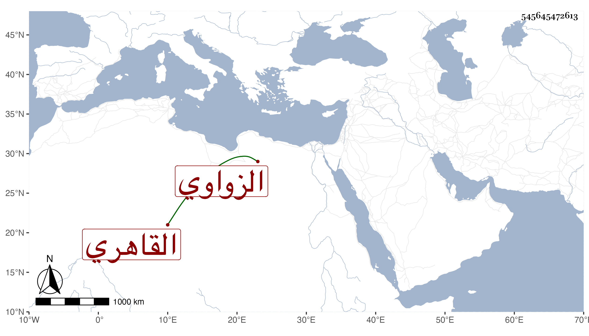

0902Sakhawi.DawLamic.ITO20230111-ara1.EIS1600.545645472613
Biography ID: 545645472613
287
محمد بن يوسف بن أحمد بن عدب الدائم فتح الدين الزواوي القاهري خال السراج بن الملقن . سمع مع ابن اخته كثيرا على الأحمدين ابن كشتغدي وابن علي المشتولي وأفاده ابن أخته فيما قاله شيخنا في معجمه وسمع عليه وقال أنه كان خياطا خيرا . مات سنة سبع ، وتبعه المقريزي في عقوده .
